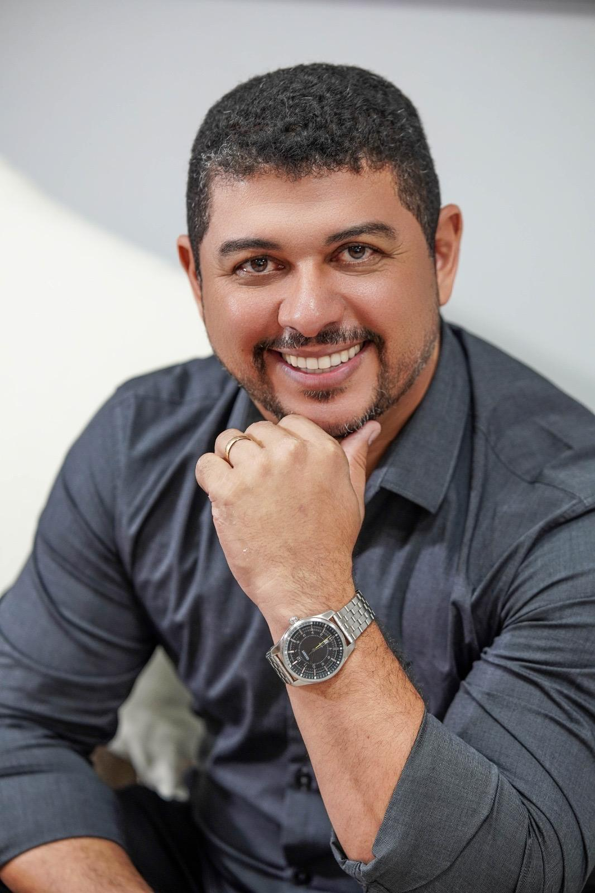

Organize sua vida financeira, invista com clareza e construa um futuro seguro e intencional.
Seu dinheiro precisa trabalhar a favor da sua vida, dos seus objetivos e daquilo que realmente importa. Com estratégia, direção e acompanhamento certo, é possível viver bem o presente e planejar um futuro melhor.

Mais clareza, controle e direção para suas finanças.
Os serviços são indicados para profissionais liberais, servidores públicos, casais, famílias, ou pessoas em transição de fase de vida que desejam sair da desorganização e tomar decisões com mais segurança.
Organização
Para quem ganha dinheiro, mas não consegue avançar, sente falta de sair da desorganização ou quer parar de apenas "apagar incêndios".
Investimentos com Direção
Para quem quer começar a investir da forma certa, ou já investe, mas sente falta de método e estratégia clara.
Planejamento Realista
Para quem possui objetivos importantes e quer uma estratégia para equilibrar o presente e o futuro, sem improvisos.
Acompanhamento
Para quem busca construir patrimônio com consciência, consistência e acompanhamento de longo prazo.
Planejamento financeiro com visão humana, estratégica e personalizada.
Cada pessoa vive uma realidade diferente. Cada família possui desafios, prioridades, sonhos, riscos e possibilidades próprias. Por isso, meu trabalho não é entregar soluções genéricas ou fórmulas prontas.
O foco é construir com você um plano financeiro que faça sentido para sua fase de vida, sua estrutura familiar, sua capacidade atual e seus objetivos futuros.
O que você encontra aqui:
- ✦ Clareza sobre sua realidade financeira.
- ✦ Organização com método.
- ✦ Direcionamento para decisões importantes.
- ✦ Planejamento conectado aos seus projetos de vida.
- ✦ Orientação de investimentos com coerência, perfil e propósito.
- ✦ Acompanhamento para transformar intenção em prática.
O que este trabalho pode gerar na sua vida.
Trilharemos um caminho para que você possa entender melhor seu momento financeiro, desenvolvendo uma relação muito mais madura, saudável e estratégica com os seus recursos.
- Mais clareza sobre sua realidade financeira.
- Controle de forma prática e menos ansiedade diante das contas.
- Decisões de investimento mais conscientes e seguras.
- Equilíbrio entre curtir o presente e garantir o futuro.
- Um plano realista e palpável para alcançar seus objetivos.
Transformar a relação com o dinheiro também transforma a vida.
Meu nome é Leo Campos e minha missão é ajudar pessoas a desenvolverem uma vida financeira mais organizada, consciente e alinhada com seus objetivos.
Ao longo da minha trajetória no mercado financeiro, percebi que o problema muitas vezes está na ausência de direção, de método e de um plano claro. Por isso, meu trabalho vai além de falar sobre números. Eu ajudo meus clientes a enxergarem sua realidade com clareza, tomarem decisões inteligentes e construírem um caminho financeiro possível, equilibrado e sustentável.
"Porque finanças bem organizadas não servem apenas para acumular patrimônio. Servem para trazer paz, segurança, liberdade e intenção para a vida."
Ajudar você a viver com mais direção.
Eu acredito que a vida financeira precisa servir à vida como um todo. Por isso, meu trabalho não se resume a planilhas ou conceitos técnicos. Ele passa por entender quem você é, onde está e qual é o caminho que faz sentido para sua realidade.
Mais do que falar sobre onde você deve colocar o seu dinheiro, estou aqui para entender o que o dinheiro significa para as suas escolhas de vida.
Um trabalho focado em orientação profissional, visão humana e construção estratégica.
"Minha maior prioridade não é vender produtos de investimento, mas ensinar e estruturar o plano certo para que você durma tranquilo e veja seu propósito se realizando."
Experiência, base técnica e uma visão prática para conduzir decisões importantes.
Leo Campos reúne formação, certificações e experiência de mercado para orientar pessoas e famílias em decisões financeiras com mais segurança e consciência.
Especialista em Investimentos
Certificação ANBIMA aplicada ao planejamento do cliente.
Consultor de Valores
Mobiliários
Autorizado pela CVM, atuação com foco em transparência e seriedade.
+14 anos de
Experiência
No mercado financeiro, provendo orientações sólidas.
MBA em Finanças e Planejamento
Administrador de empresas, com MBAs voltados a finanças.
Essa base técnica é colocada a serviço de algo muito prático: ajudar você a sair da desorganização, estruturar prioridades e construir uma estratégia financeira coerente com sua realidade e seus objetivos.
Cada fase da vida financeira pede um tipo de direcionamento.
Processos desenhados para atender desde quem precisa de uma leitura clara da situação atual até quem deseja acompanhamento, reorganização e planejamento com visão de futuro.
Diagnóstico das
Finanças Pessoais
Análise clara da sua situação financeira atual. Ponto de partida ideal para identificar desorganizações, desperdícios e prioridades de ajuste.
Porta de entrada
Acompanhamento
Financeiro — 12 meses
Processo completo para diagnosticar, reorganizar e amadurecer decisões de orçamento, dívidas e patrimônio com suporte contínuo ao longo do ano.
Processo contínuo
Planejamento dos Projetos de Vida e Investimentos
Conexão entre a vida financeira e projetos concretos. O foco é alinhar totalmente os investimentos com seus objetivos, prazos, perfil e risco.
Visão de futuro
Aprender e refletir é o primeiro passo para avançar.
Educação financeira humana e aplicável à vida real. Tenha acesso a conteúdos transformadores e eventos que conectam dinheiro, propósito e bem-estar.
Palestras e Workshops
Conteúdo feito sob medida para empresas, escolas, igrejas e eventos. O objetivo é provocar reflexão e promover uma profunda transformação na cultura das instituições e de seus participantes.
Conteúdos Grátis
Acompanhe minha rotina, metodologias e análises diárias nas minhas plataformas públicas. Receba orientações diretas, dicas valiosas e materiais totalmente abertos e fundamentados para evoluir 1% ao dia.
Cursos de Formação: Método Pleno
Programas de ensino fechados para quem deseja mergulhar na matemática financeira usando um método prático e guiado passo a passo. Aprenda a investir, administrar dívidas e planejar patrimônio do zero absoluto.
Dúvidas comuns antes do primeiro contato.
Ele pode ajudar tanto quem está desorganizado financeiramente quanto quem já investe, mas sente falta de estratégia, clareza e alinhamento entre dinheiro, objetivos e patrimônio.
Na conversa inicial, seu momento é entendido com mais profundidade. A partir disso, é indicado o formato mais coerente com a sua realidade e sua necessidade atual.
Sim. A proposta não é aplicar soluções genéricas, mas construir um direcionamento financeiro compatível com sua fase de vida, estrutura familiar e objetivos.
Sim. A página já foi estruturada para funcionar muito bem com atendimento online e personalizado, podendo depois ser ajustada para formatos presenciais ou híbridos.
Sua vida financeira não precisa continuar no improviso.
Com orientação profissional, é possível organizar o presente, reduzir erros e construir um futuro mais sólido, equilibrado e intencional. O próximo passo pode começar com uma conversa.